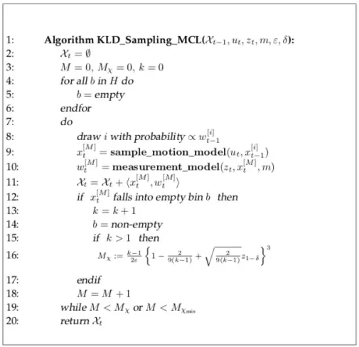
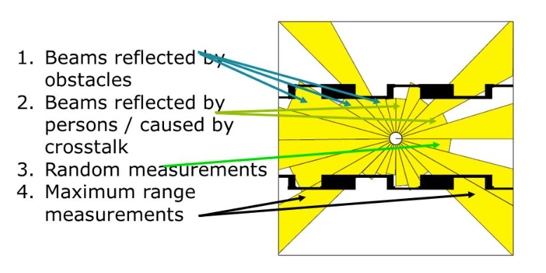
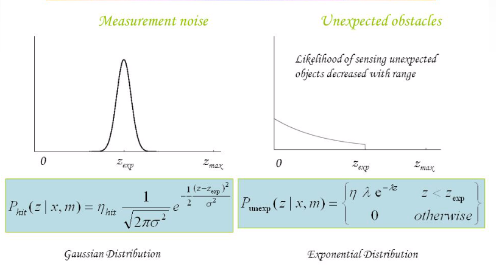
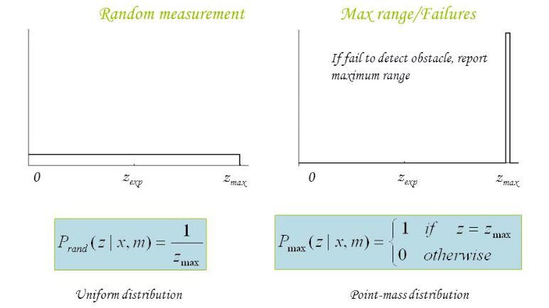
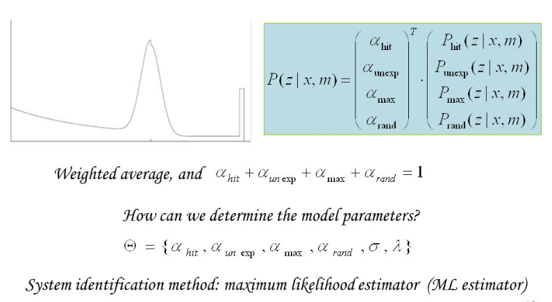
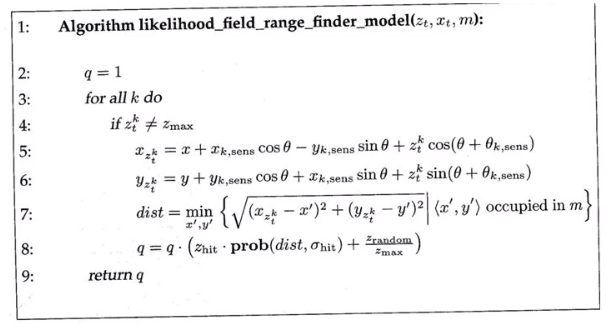
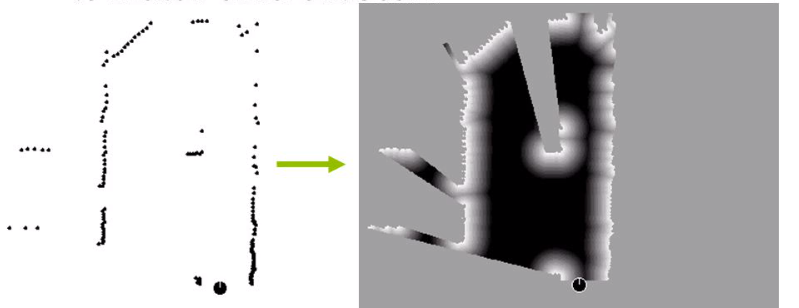
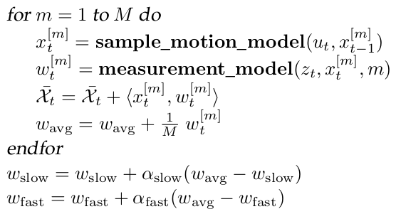

AMCL Implementation
- Init histogram (basically a kd-tree) setting all bins to empty (bin has no particle), that each bin represents a small cell/tile in a map
- For \(M<M_{m}\) and \(M<M_{max}\), where \(M\) means the particle index, generate/select particle \(i\) by \(\text{probability}\propto \mathbf{w}_{t-1}^{[i]}\), indicating the previous step \(t-1\) particles with the highest weights are most likely selected (weight represents the confidence of a correct particle's pose)
- motion model update by this time motion \(\mathbf{u}_t\) to the last time state \(\mathbf{x}_{t-1}^{[i]}\) to produce this time motion result \(\mathbf{x}_{t}^{[M]}\)
- measurement model update (such as by scan matching) by this time motion result \(\mathbf{x}_{t}^{[M]}\) with this time observation \(\mathbf{z}_t\) to produce this time measurement \(\mathbf{w}_{t}^{[M]}\), also served as the weights.
- If \(\mathbf{x}_{t}^{[M]}\) falls into an empty bin \(b\), mark the bin non-empty and increase the total number of particle \(M_{m}\) by the KLD formula
- Keep running the loop until that \(M<M_{m}\) and \(M<M_{max}\) do not satisfy

Config Tips
Particle Filter Process
laserReceived(...) is the callback when a new laser scan arrives.
tf2_ros::MessageFilter<sensor_msgs::LaserScan>* laser_scan_filter_;
laser_scan_filter_->registerCallback(boost::bind(&AmclNode::laserReceived,
this, _1));
getOdomPose(...) loads latest_odom_pose_ to pose.
Then given by the odom prior kinematic prediction, move all particles pf_ by the odata.pose = pose; and odata.delta = delta; with applied Gaussian noises.
In detail, UpdateAction(...) defines four types of kinematic odom models: ODOM_MODEL_OMNI, ODOM_MODEL_DIFF, ODOM_MODEL_OMNI_CORRECTED and ODOM_MODEL_DIFF_CORRECTED.
Take the source data laser_scan applied with some
AmclNode::laserReceived(const sensor_msgs::LaserScanConstPtr& laser_scan)
{
// get and update odom
pf_vector_t pose;
getOdomPose(latest_odom_pose_, pose.v[0], pose.v[1], pose.v[2],
laser_scan->header.stamp, base_frame_id_);
delta.v[0] = pose.v[0] - pf_odom_pose_.v[0];
delta.v[1] = pose.v[1] - pf_odom_pose_.v[1];
delta.v[2] = angle_diff(pose.v[2], pf_odom_pose_.v[2]);
AMCLOdomData odata;
odata.pose = pose;
odata.delta = delta;
odom_->UpdateAction(pf_, (AMCLSensorData*)&odata);
// The AMCLLaserData destructor will free this memory
ldata.ranges = new double[ldata.range_count][2];
ROS_ASSERT(ldata.ranges);
for(int i=0;i<ldata.range_count;i++)
{
// amcl doesn't (yet) have a concept of min range. So we'll map short
// readings to max range.
if(laser_scan->ranges[i] <= range_min)
ldata.ranges[i][0] = ldata.range_max;
else if(laser_scan->ranges[i] > ldata.range_max)
ldata.ranges[i][0] = std::numeric_limits<decltype(ldata.range_max)>::max();
else
ldata.ranges[i][0] = laser_scan->ranges[i];
// Compute bearing
ldata.ranges[i][1] = angle_min +
(i * angle_increment);
}
lasers_[laser_index]->UpdateSensor(pf_, (AMCLSensorData*)&ldata);
pf_update_resample(pf_);
pf_odom_pose_ = pose;
}
UpdateAction(...)
Apply Gaussian noises to kinematic movement (OMNI/DIFF) to update every particle's position.
////////////////////////////////////////////////////////////////////////////////
// Apply the action model
bool AMCLOdom::UpdateAction(pf_t *pf, AMCLSensorData *data)
{
AMCLOdomData *ndata;
ndata = (AMCLOdomData*) data;
// Compute the new sample poses
pf_sample_set_t *set;
set = pf->sets + pf->current_set;
pf_vector_t old_pose = pf_vector_sub(ndata->pose, ndata->delta); // just a vector element-wise subtraction
switch( this->model_type )
{
case ODOM_MODEL_OMNI:
{
double delta_trans, delta_rot, delta_bearing;
double delta_trans_hat, delta_rot_hat, delta_strafe_hat;
delta_trans = sqrt(ndata->delta.v[0]*ndata->delta.v[0] +
ndata->delta.v[1]*ndata->delta.v[1]);
delta_rot = ndata->delta.v[2];
// Precompute a couple of things
double trans_hat_stddev = (alpha3 * (delta_trans*delta_trans) +
alpha1 * (delta_rot*delta_rot));
double rot_hat_stddev = (alpha4 * (delta_rot*delta_rot) +
alpha2 * (delta_trans*delta_trans));
double strafe_hat_stddev = (alpha1 * (delta_rot*delta_rot) +
alpha5 * (delta_trans*delta_trans));
for (int i = 0; i < set->sample_count; i++)
{
pf_sample_t* sample = set->samples + i;
delta_bearing = angle_diff(atan2(ndata->delta.v[1], ndata->delta.v[0]),
old_pose.v[2]) + sample->pose.v[2];
double cs_bearing = cos(delta_bearing);
double sn_bearing = sin(delta_bearing);
// Sample pose differences
delta_trans_hat = delta_trans + pf_ran_gaussian(trans_hat_stddev);
delta_rot_hat = delta_rot + pf_ran_gaussian(rot_hat_stddev);
delta_strafe_hat = 0 + pf_ran_gaussian(strafe_hat_stddev);
// Apply sampled update to particle pose
sample->pose.v[0] += (delta_trans_hat * cs_bearing +
delta_strafe_hat * sn_bearing);
sample->pose.v[1] += (delta_trans_hat * sn_bearing -
delta_strafe_hat * cs_bearing);
sample->pose.v[2] += delta_rot_hat ;
}
} break;
case ODOM_MODEL_DIFF: { ... } break;
case ODOM_MODEL_OMNI_CORRECTED: { ... } break;
case ODOM_MODEL_DIFF_CORRECTED: { ... } break;
}
return true;
}
UpdateSensor(...)
UpdateSensor(...) provides four types of laser update models: LASER_MODEL_BEAM, LASER_MODEL_LIKELIHOOD_FIELD and LASER_MODEL_LIKELIHOOD_FIELD_PROB.
The beam-based model has the following considerations:

The four considerations can be measured by the four proximity models


Together, the beam-based model has the below output.

The beam-based model drawbacks:
-
Computation-intensive in ray casting/matching.
-
Not smooth: since each ray contributes as an individual detection not considering its spatial surrounding, overall the beam-based model is sensitive to detecting small obstacle and small robot pose change
The likelihood field model goes as below to address the beam-based model's problem (2d map for a particle \(m\) with the \(k\)-th laser beam for instance):
For robot pose \((x, y)\) given its orientation \(\theta\), the predicted robot pose \((x_{z^{k}_{t}}, y_{z^{k}_{t}})\) corresponding to laser length \(z^{k}_{t}\) and the laser's direction \(\theta_k\) can be computed as below
Each laser \(z^{k}_{t}\) predicted robot pose should stay as close as possible to the overall estimated robot pose \((\hat{x}, \hat{y})\)
Each laser should see assumed Gaussian distribution \(\text{prob}(\text{dist}, \sigma_{\text{hit}}) \sim N(\text{dist}, \sigma_{\text{hit}})\). Laser-obstacle hit measurement only takes binary value \(z_{\text{hit}} \in \{0, 1\}\). Here \(q\) serves as the accumulated weight for the particle \(m\). In other words, \(m.\text{weight}=\prod^K_{k=1} q_k\).
In conclusion, the likelihood field algo goes as below.

Beam-based occupancy model vs likelihood model:

// Apply the laser sensor model
bool AMCLLaser::UpdateSensor(pf_t *pf, AMCLSensorData *data)
{
if (this->max_beams < 2)
return false;
// Apply the laser sensor model
if(this->model_type == LASER_MODEL_BEAM)
pf_update_sensor(pf, (pf_sensor_model_fn_t) BeamModel, data);
else if(this->model_type == LASER_MODEL_LIKELIHOOD_FIELD)
pf_update_sensor(pf, (pf_sensor_model_fn_t) LikelihoodFieldModel, data);
else if(this->model_type == LASER_MODEL_LIKELIHOOD_FIELD_PROB)
pf_update_sensor(pf, (pf_sensor_model_fn_t) LikelihoodFieldModelProb, data);
else
pf_update_sensor(pf, (pf_sensor_model_fn_t) BeamModel, data);
return true;
}
Take LASER_MODEL_LIKELIHOOD_FIELD for example.
Compute laser beam \(x\) and \(y\) coord by hit.v[0] = pose.v[0] + obs_range * cos(pose.v[2] + obs_bearing); and hit.v[1] = pose.v[1] + obs_range * sin(pose.v[2] + obs_bearing); (of course there are some assertions such as filtering out out-of-max-limit laser beams).
The map coords are mapped by index z = self->map->cells[MAP_INDEX(self->map,mi,mj)].occ_dist;.
pz += self->z_hit * exp(-(z * z) / z_hit_denom); corresponds to \(z_{\text{hit}} \cdot \text{prob}(\text{dist}, \sigma_{\text{hit}})\)
pz += self->z_rand * z_rand_mult; corresponds to \(\frac{z_{\text{random}}}{z_{\text{max}}}\).
pz is the individual sample's each laser beam probability by Gaussian model.
p += pz*pz*pz; is the total of one sample's weight sample->weight *= p;.
double AMCLLaser::LikelihoodFieldModel(AMCLLaserData *data, pf_sample_set_t* set)
{
AMCLLaser *self;
int i, j, step;
double z, pz;
double p;
double obs_range, obs_bearing;
double total_weight;
pf_sample_t *sample;
pf_vector_t pose;
pf_vector_t hit;
self = (AMCLLaser*) data->sensor;
total_weight = 0.0;
// Compute the sample weights
for (j = 0; j < set->sample_count; j++)
{
sample = set->samples + j;
pose = sample->pose;
// Take account of the laser pose relative to the robot
pose = pf_vector_coord_add(self->laser_pose, pose);
p = 1.0;
// Pre-compute a couple of things
double z_hit_denom = 2 * self->sigma_hit * self->sigma_hit;
double z_rand_mult = 1.0/data->range_max;
step = (data->range_count - 1) / (self->max_beams - 1);
// Step size must be at least 1
if(step < 1)
step = 1;
for (i = 0; i < data->range_count; i += step)
{
obs_range = data->ranges[i][0];
obs_bearing = data->ranges[i][1];
// This model ignores max range readings
if(obs_range >= data->range_max)
continue;
// Check for NaN
if(obs_range != obs_range)
continue;
pz = 0.0;
// Compute the endpoint of the beam
hit.v[0] = pose.v[0] + obs_range * cos(pose.v[2] + obs_bearing);
hit.v[1] = pose.v[1] + obs_range * sin(pose.v[2] + obs_bearing);
// Convert to map grid coords.
int mi, mj;
mi = MAP_GXWX(self->map, hit.v[0]);
mj = MAP_GYWY(self->map, hit.v[1]);
// Part 1: Get distance from the hit to closest obstacle.
// Off-map penalized as max distance
if(!MAP_VALID(self->map, mi, mj))
z = self->map->max_occ_dist;
else
z = self->map->cells[MAP_INDEX(self->map,mi,mj)].occ_dist;
// Gaussian model
// NOTE: this should have a normalization of 1/(sqrt(2pi)*sigma)
pz += self->z_hit * exp(-(z * z) / z_hit_denom);
// Part 2: random measurements
pz += self->z_rand * z_rand_mult;
// TODO: outlier rejection for short readings
assert(pz <= 1.0);
assert(pz >= 0.0);
// p *= pz;
// here we have an ad-hoc weighting scheme for combining beam probs
// works well, though...
p += pz*pz*pz;
}
sample->weight *= p;
total_weight += sample->weight;
}
return(total_weight);
}
Finally, having computed the sample weights total = (*sensor_fn) (sensor_data, set); by the above LikelihoodFieldModel(...),
normalize the sample weights sample->weight /= total;.
Given the observation from start to the last time step \(\mathbf{z}_{1:t-1}\) and kinematic motion of all history steps \(\mathbf{u}_{1:t}\), the \(m\)-th particle's sensor observation probability is \(p(\mathbf{z}_t | \mathbf{z}_{1:t-1}, \mathbf{u}_{1:t}, m)\).
Take the particles' mean position as final estimate, there is \(\frac{1}{M} \sum^{M}_{m=1} w^{[m]}_t \approx p(\mathbf{z}_t | \mathbf{z}_{1:t-1}, \mathbf{u}_{1:t}, m)\), indicating that for every particle \(m\), its position should stay close to each other.
However, this long-term average strategy considering over the \(1:t-1\) time periods can be bad (particles can be sparse when performing global relocalization, and history errors accumulate over the time). A short-term average strategy on the other hand have only recent limited steps. A good solution should reach a trade off between long-term and short-term average strategies.
Here introduces \(0 < \alpha_{\text{slow}} \ll \alpha_{\text{fast}} < 1\) that double alpha_slow, alpha_fast; are decay rates for running averages.

\(w_{\text{fast}}\) and \(w_{\text{slow}}\) are ratio between short/long-term particles.
Later will see \(1 - \frac{w_{\text{fast}}}{w_{\text{slow}}}\) that w_diff = 1.0 - pf->w_fast / pf->w_slow; determines if particles are resampled by randomly generation or directly copied from the existing ones.
// Update the filter with some new sensor observation
void pf_update_sensor(pf_t *pf, pf_sensor_model_fn_t sensor_fn, void *sensor_data)
{
int i;
pf_sample_set_t *set;
pf_sample_t *sample;
double total;
set = pf->sets + pf->current_set;
// Compute the sample weights
total = (*sensor_fn) (sensor_data, set);
set->n_effective = 0;
if (total > 0.0)
{
// Normalize weights
double w_avg=0.0;
for (i = 0; i < set->sample_count; i++)
{
sample = set->samples + i;
w_avg += sample->weight;
sample->weight /= total;
set->n_effective += sample->weight*sample->weight;
}
// Update running averages of likelihood of samples (Prob Rob p258)
w_avg /= set->sample_count;
if(pf->w_slow == 0.0)
pf->w_slow = w_avg;
else
pf->w_slow += pf->alpha_slow * (w_avg - pf->w_slow);
if(pf->w_fast == 0.0)
pf->w_fast = w_avg;
else
pf->w_fast += pf->alpha_fast * (w_avg - pf->w_fast);
//printf("w_avg: %e slow: %e fast: %e\n",
//w_avg, pf->w_slow, pf->w_fast);
}
else
{
// Handle zero total
for (i = 0; i < set->sample_count; i++)
{
sample = set->samples + i;
sample->weight = 1.0 / set->sample_count;
}
}
set->n_effective = 1.0/set->n_effective;
return;
}
pf_update_resample(...)
Resample particles based on weights of a KD tree.
pf_cluster_stats(...) computes the mean and covariance of a set of weighted particles.
sample->pose.v[0] is particle's \(x\) coordinate;
sample->pose.v[1] is particle's \(y\) coordinate;
cos(sample->pose.v[2]) particle's orientation \(\theta\)'s in the \(x\)-direction;
sin(sample->pose.v[2]) particle's orientation \(\theta\)'s in the \(y\)-direction.
void pf_cluster_stats(pf_t *pf, pf_sample_set_t *set)
{
...
m[0] += sample->weight * sample->pose.v[0];
m[1] += sample->weight * sample->pose.v[1];
m[2] += sample->weight * cos(sample->pose.v[2]);
m[3] += sample->weight * sin(sample->pose.v[2]);
// Compute covariance in linear components
for (j = 0; j < 2; j++)
for (k = 0; k < 2; k++)
{
c[j][k] += sample->weight * sample->pose.v[j] * sample->pose.v[k];
}
// Covariance in linear components
for (j = 0; j < 2; j++)
for (k = 0; k < 2; k++)
set->cov.m[j][k] = c[j][k] / weight - set->mean.v[j] * set->mean.v[k];
...
}
pf_update_resample(...) computes means and covariances of the samples,
then computes the histogram of the number of particles contained in a cell by pf_kdtree_insert(...);
finally, it judges if the particles are converged to a small distance threshold centered at a cell by pf_update_converged(...).
The sampling goes as below
* pf_sample_set_t *set_a, *set_b; are used to indicate current/backup sample set ((pf->current_set + 1) % 2; means alternating activating using the current set)
* while(set_b->sample_count < pf->max_samples) says continuing generating new samples until hitting max sample limit
* w_diff = 1.0 - pf->w_fast / pf->w_slow; determines the ratio of samples being randomly generated vs set to the current pose
* if(drand48() < w_diff) is a random number test that if true, the new sample particle pose sample_b->pose = (pf->random_pose_fn)(pf->random_pose_data); is randomly generated; if not sample_b->pose = sample_a->pose; is set to copying the sample_a's pose, which is the current pose as in the init set_a = pf->sets + pf->current_set;
* pf_resample_limit(...) is used to compute KLD sample number limit
// Resample the distribution
void pf_update_resample(pf_t *pf)
{
int i;
double total;
pf_sample_set_t *set_a, *set_b;
pf_sample_t *sample_a, *sample_b;
//double r,c,U;
//int m;
//double count_inv;
double* c;
double w_diff;
set_a = pf->sets + pf->current_set;
set_b = pf->sets + (pf->current_set + 1) % 2;
if (pf->selective_resampling != 0)
{
if (set_a->n_effective > 0.5*(set_a->sample_count))
{
// copy set a to b
copy_set(set_a,set_b);
// Re-compute cluster statistics
pf_cluster_stats(pf, set_b);
// Use the newly created sample set
pf->current_set = (pf->current_set + 1) % 2;
return;
}
}
// Build up cumulative probability table for resampling.
// TODO: Replace this with a more efficient procedure
// (e.g., http://www.network-theory.co.uk/docs/gslref/GeneralDiscreteDistributions.html)
c = (double*)malloc(sizeof(double)*(set_a->sample_count+1));
c[0] = 0.0;
for(i=0;i<set_a->sample_count;i++)
c[i+1] = c[i]+set_a->samples[i].weight;
// Create the kd tree for adaptive sampling
pf_kdtree_clear(set_b->kdtree);
// Draw samples from set a to create set b.
total = 0;
set_b->sample_count = 0;
w_diff = 1.0 - pf->w_fast / pf->w_slow;
if(w_diff < 0.0)
w_diff = 0.0;
while(set_b->sample_count < pf->max_samples)
{
sample_b = set_b->samples + set_b->sample_count++;
if(drand48() < w_diff)
sample_b->pose = (pf->random_pose_fn)(pf->random_pose_data);
else
{
// Naive discrete event sampler
double r;
r = drand48();
for(i=0;i<set_a->sample_count;i++)
{
if((c[i] <= r) && (r < c[i+1]))
break;
}
assert(i<set_a->sample_count);
sample_a = set_a->samples + i;
assert(sample_a->weight > 0);
// Add sample to list
sample_b->pose = sample_a->pose;
}
sample_b->weight = 1.0;
total += sample_b->weight;
// Add sample to histogram
pf_kdtree_insert(set_b->kdtree, sample_b->pose, sample_b->weight);
// See if we have enough samples yet
if (set_b->sample_count > pf_resample_limit(pf, set_b->kdtree->leaf_count))
break;
}
// Reset averages, to avoid spiraling off into complete randomness.
if(w_diff > 0.0)
pf->w_slow = pf->w_fast = 0.0;
// Normalize weights
for (i = 0; i < set_b->sample_count; i++)
{
sample_b = set_b->samples + i;
sample_b->weight /= total;
}
// Re-compute cluster statistics
pf_cluster_stats(pf, set_b);
// Use the newly created sample set
pf->current_set = (pf->current_set + 1) % 2;
pf_update_converged(pf);
free(c);
return;
}
pf_kdtree_insert(...) takes a pose's position's cell as the key.
The key's value is the weight.
The kd tree builds in a recursive manner that if two particle stay in the same cell, the cell's weight takes the sum of the two particles' weights pf_kdtree_equal(self, key, node->key) node->value += value;.
////////////////////////////////////////////////////////////////////////////////
// Insert a pose into the tree.
void pf_kdtree_insert(pf_kdtree_t *self, pf_vector_t pose, double value)
{
int key[3];
key[0] = floor(pose.v[0] / self->size[0]);
key[1] = floor(pose.v[1] / self->size[1]);
key[2] = floor(pose.v[2] / self->size[2]);
self->root = pf_kdtree_insert_node(self, NULL, self->root, key, value);
return;
}
////////////////////////////////////////////////////////////////////////////////
// Insert a node into the tree
pf_kdtree_node_t *pf_kdtree_insert_node(pf_kdtree_t *self, pf_kdtree_node_t *parent,
pf_kdtree_node_t *node, int key[], double value)
{
int i;
int split, max_split;
// If the node doesnt exist yet...
if (node == NULL)
{
assert(self->node_count < self->node_max_count);
node = self->nodes + self->node_count++;
memset(node, 0, sizeof(pf_kdtree_node_t));
node->leaf = 1;
if (parent == NULL)
node->depth = 0;
else
node->depth = parent->depth + 1;
for (i = 0; i < 3; i++)
node->key[i] = key[i];
node->value = value;
self->leaf_count += 1;
}
// If the node exists, and it is a leaf node...
else if (node->leaf)
{
// If the keys are equal, increment the value
if (pf_kdtree_equal(self, key, node->key))
{
node->value += value;
}
// The keys are not equal, so split this node
else
{
// Find the dimension with the largest variance and do a mean
// split
max_split = 0;
node->pivot_dim = -1;
for (i = 0; i < 3; i++)
{
split = abs(key[i] - node->key[i]);
if (split > max_split)
{
max_split = split;
node->pivot_dim = i;
}
}
assert(node->pivot_dim >= 0);
node->pivot_value = (key[node->pivot_dim] + node->key[node->pivot_dim]) / 2.0;
if (key[node->pivot_dim] < node->pivot_value)
{
node->children[0] = pf_kdtree_insert_node(self, node, NULL, key, value);
node->children[1] = pf_kdtree_insert_node(self, node, NULL, node->key, node->value);
}
else
{
node->children[0] = pf_kdtree_insert_node(self, node, NULL, node->key, node->value);
node->children[1] = pf_kdtree_insert_node(self, node, NULL, key, value);
}
node->leaf = 0;
self->leaf_count -= 1;
}
}
// If the node exists, and it has children...
else
{
assert(node->children[0] != NULL);
assert(node->children[1] != NULL);
if (key[node->pivot_dim] < node->pivot_value)
pf_kdtree_insert_node(self, node, node->children[0], key, value);
else
pf_kdtree_insert_node(self, node, node->children[1], key, value);
}
return node;
}
The convergence condition judges all particles' positions (no orientation) be within a distance threshold, that is if(fabs(sample->pose.v[0] - mean_x) > pf->dist_threshold || fabs(sample->pose.v[1] - mean_y) > pf->dist_threshold) to be false
int pf_update_converged(pf_t *pf)
{
int i;
pf_sample_set_t *set;
pf_sample_t *sample;
double total;
set = pf->sets + pf->current_set;
double mean_x = 0, mean_y = 0;
for (i = 0; i < set->sample_count; i++){
sample = set->samples + i;
mean_x += sample->pose.v[0];
mean_y += sample->pose.v[1];
}
mean_x /= set->sample_count;
mean_y /= set->sample_count;
for (i = 0; i < set->sample_count; i++){
sample = set->samples + i;
if(fabs(sample->pose.v[0] - mean_x) > pf->dist_threshold ||
fabs(sample->pose.v[1] - mean_y) > pf->dist_threshold){
set->converged = 0;
pf->converged = 0;
return 0;
}
}
set->converged = 1;
pf->converged = 1;
return 1;
}
KLD Limit
pf_resample_limit(...) implements the KLD limit.
where \(z_{1-\delta}\) is the upper \(1-\delta\) quantile of the standard normal distribution.
// Compute the required number of samples, given that there are k bins
// with samples in them. This is taken directly from Fox et al.
int pf_resample_limit(pf_t *pf, int k)
{
double a, b, c, x;
int n;
// Return max_samples in case k is outside expected range, this shouldn't
// happen, but is added to prevent any runtime errors
if (k < 1 || k > pf->max_samples)
return pf->max_samples;
// Return value if cache is valid, which means value is non-zero positive
if (pf->limit_cache[k-1] > 0)
return pf->limit_cache[k-1];
if (k == 1)
{
pf->limit_cache[k-1] = pf->max_samples;
return pf->max_samples;
}
a = 1;
b = 2 / (9 * ((double) k - 1));
c = sqrt(2 / (9 * ((double) k - 1))) * pf->pop_z;
x = a - b + c;
n = (int) ceil((k - 1) / (2 * pf->pop_err) * x * x * x);
if (n < pf->min_samples)
{
pf->limit_cache[k-1] = pf->min_samples;
return pf->min_samples;
}
if (n > pf->max_samples)
{
pf->limit_cache[k-1] = pf->max_samples;
return pf->max_samples;
}
pf->limit_cache[k-1] = n;
return n;
}